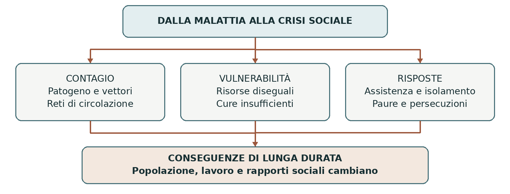

1347–1353 • Epidemia, società e trasformazioni
La peste del Trecento
La grande peste di metà Trecento colpì una vasta parte dell’Eurasia e del Mediterraneo. In Europa provocò una mortalità enorme, ma non uniforme. La sua storia intreccia un agente biologico, reti di circolazione, condizioni sociali e risposte collettive: non si spiega soltanto con la paura o con la medicina dell’epoca.
0. Domanda generatrice
Perché una malattia diventò una frattura demografica e sociale di lunga durata?
In sintesi Il contagio attraversò reti molto estese e colpì società vulnerabili; la morte di tante persone modificò lavoro, famiglie, patrimoni e rapporti di potere.
1. Il mondo precedente
Nei secoli precedenti la popolazione europea era cresciuta insieme alle città, alle superfici coltivate e agli
scambi. All’inizio del Trecento molte regioni conobbero però difficoltà alimentari, guerre e tensioni sulle
risorse. La grande carestia del 1315–1317 colpì soprattutto l’Europa settentrionale: non va estesa
automaticamente a tutto il continente.
Rotte marittime e terrestri collegavano Asia, Mar Nero e Mediterraneo. Questi legami trasportavano beni, persone e conoscenze, ma potevano favorire anche la diffusione di patogeni e dei loro vettori. Le autorità disponevano di ospedali e pratiche assistenziali, senza conoscere batteri o meccanismi microbiologici dell’infezione.
In sintesi La crisi arrivò in un mondo connesso, nel quale ricchezza commerciale e vulnerabilità sanitaria potevano crescere insieme.
2. Le fratture
La malattia era causata da Yersinia pestis, identificato oggi anche attraverso il DNA antico. Il batterio può
circolare tra animali e parassiti e raggiungere gli esseri umani; la forma polmonare può trasmettersi
attraverso goccioline respiratorie. Il peso relativo dei diversi vettori nelle epidemie storiche resta discusso:
la formula “solo ratti e pulci” è troppo rigida.
Tra 1347 e 1348 l’epidemia raggiunse numerosi porti e città mediterranee, quindi si diffuse in altre regioni
europee. La mortalità fu altissima e molto diseguale. Le stime complessive oscillano e le fonti sono
incomplete: parlare di una quota enorme della popolazione è fondato; attribuire un’unica percentuale esatta
a ogni città non lo è.
In sintesi La diffusione fu rapida, ma itinerari, intensità e conseguenze variarono secondo i territori.
3. Attori, gruppi e conflitti
Le persone affrontarono l’epidemia con conoscenze limitate e risorse socialmente diseguali.
| Attori | Obiettivi e interessi |
|---|---|
| Malati e famiglie | Cercano cura e sostegno; la morte può interrompere reti domestiche e attività economiche. |
| Medici e assistenti | Usano saperi disponibili e osservazioni pratiche; alcuni prestano assistenza nonostante il rischio. |
| Autorità cittadine | Tentano di organizzare sepolture, approvvigionamenti, controllo degli arrivi e assistenza. |
| Gruppi religiosi | Offrono consolazione e aiuto; alcuni interpretano l’epidemia come punizione e promuovono penitenze. |
| Minoranze perseguitate | In varie regioni le comunità ebraiche vengono falsamente accusate e colpite da violenze. |
In sintesi La crisi produsse solidarietà e organizzazione, ma anche abbandono, disuguaglianza e ricerca di capri espiatori.
4. Il processo storico
Dalle reti eurasiatiche alle città europee
Ricerche pubblicate nel 2022 hanno identificato DNA del batterio in persone sepolte nel 1338–1339
nell’attuale Kirghizistan, vicino al lago Issyk-Kul. I risultati collegano quei ceppi alla grande
diversificazione associata alla pandemia. È un indizio importante sulle origini, non la ricostruzione
completa di ogni percorso del contagio.
Nel Mediterraneo il movimento di navi, merci e uomini contribuì alla propagazione. In Italia l’ondata del 1348 colpì duramente numerose città. Gli abitanti osservarono febbre, rigonfiamenti e morte rapida, ma spiegavano la malattia attraverso teorie dell’aria corrotta, influenze celesti, squilibri del corpo e significati religiosi.
Vivere dentro la catastrofe
Fuggire era una possibilità soprattutto per chi disponeva di denaro e di una residenza altrove; poteva anche spostare il rischio verso altri luoghi. Le famiglie povere avevano meno alternative. L’assistenza non cessò ovunque, ma il numero dei malati e dei morti mise in crisi cure, lavoro e sepolture.
Le false accuse di avvelenamento dei pozzi alimentarono persecuzioni contro gli ebrei. La loro diffusione non prova alcuna responsabilità delle vittime: mostra invece come pregiudizi preesistenti potessero trasformare l’incertezza in violenza. Cronache e atti giudiziari vanno letti distinguendo ciò che le persone credevano da ciò che è accaduto.
Una società con meno abitanti
La perdita di popolazione ridusse la disponibilità di lavoratori. In diverse aree i sopravvissuti poterono chiedere salari migliori o condizioni meno gravose; alcuni governi e proprietari cercarono di bloccare queste richieste. Terre abbandonate, eredità e spostamenti modificarono la distribuzione delle risorse, con esiti differenti tra regioni e gruppi sociali.
La peste tornò in ondate successive: la crisi non finì con il primo passaggio. Nel lungo periodo si ampliarono strumenti di controllo sanitario, isolamento e registrazione. Non si deve però attribuire alla sola peste la fine del feudalesimo o la nascita del Rinascimento: trasformazioni economiche e culturali avevano più cause e tempi diversi.
In sintesi Il contagio produsse una crisi demografica, ma i suoi effetti sociali dipendevano da istituzioni, proprietà e possibilità di negoziazione.
Lo snodo decisivo
Quando il lavoro divenne più scarso, cambiarono i rapporti tra chi lavorava e chi controllava le risorse. Una conseguenza economica poteva così trasformarsi in conflitto politico.
5. Le fonti in dialogo
Boccaccio e il disordine della vita quotidiana
Nell’introduzione al Decameron, scritto dopo il 1348, Giovanni Boccaccio rappresenta la peste di Firenze come cornice della narrazione. Si rivolge a lettori, non a un ufficio statistico.
Contenuto — sintesi didattica: Il testo descrive sintomi, reazioni differenti, difficoltà dei legami familiari e crisi delle pratiche funebri. La fuga dei giovani narratori dalla città apre lo spazio della brigata e del racconto.
Interpretazione e limiti: È una fonte letteraria vicina agli eventi: seleziona e organizza l’esperienza per uno scopo narrativo. Non possiamo usarla come censimento preciso né supporre che ogni abitante agisse come i personaggi descritti.
Domanda di lettura: Quali aspetti della vita sociale emergono dal testo? Quali dati richiederebbero registri e altre fonti?
Fonte: Boccaccio, introduzione al Decameron — Fordham University
In sintesi Letteratura, documenti e DNA rispondono a domande diverse e possono essere messi in relazione.
6. Conseguenze e nuovo assetto
Le ricadute investirono famiglie, patrimoni, produzione e forme di devozione. Le rappresentazioni della morte acquistarono forte visibilità, senza diventare l’unico contenuto della cultura trecentesca. I sopravvissuti ricostruirono legami e attività in condizioni mutate.
La crisi favorì nuove riflessioni e pratiche di governo della salute. Tuttavia l’apprendimento fu graduale, discontinuo e attraversato da errori. Anche le autorità capaci di osservare il contagio restavano prive della spiegazione microbiologica moderna.
In sintesi La peste trasformò le società senza imporre a tutte la stessa direzione di cambiamento.
7. Conclusione
La malattia diventò una frattura storica perché colpì molte persone dentro reti economiche e sociali interdipendenti. Il batterio spiega l’infezione; per spiegare chi soffrì di più e come cambiò la società occorre studiare anche le condizioni umane.
Sintesi finale La peste fu causata da Yersinia pestis. Le connessioni eurasiatiche favorirono la diffusione. Mortalità e reazioni variarono tra luoghi e gruppi. Le persecuzioni nacquero da accuse false e pregiudizi. La crisi modificò il lavoro e favorì risposte sanitarie graduali.
Per studiare e collegare
Coordinate essenziali
Eurasia, Africa settentrionale e Mediterraneo; particolare attenzione all’Italia e a Firenze nel 1348. La prima grande ondata europea è collocata tra 1347 e 1353.
Saperi irrinunciabili
1. La peste nera fu un evento eurasiatico e mediterraneo.
2. Il suo agente era Yersinia pestis.
3. Il DNA antico conferma la presenza del batterio.
4. La diffusione dipese anche da reti di circolazione.
5. In Italia il 1348 fu un anno decisivo.
6. La mortalità non fu uniforme in ogni regione.
7. Le spiegazioni dei contemporanei erano diverse da quelle moderne.
8. Le accuse contro gli ebrei erano false.
9. La scarsità di lavoro poté migliorare il potere contrattuale dei sopravvissuti.
10. Le ricadute sociali non furono identiche né automatiche.
Mappa concettuale

Le cause biologiche e quelle sociali vanno distinte, poi collegate.
Strumenti e attività
Linea del tempo ragionata
| Quando | Che cosa cambia |
|---|---|
| 1315–1317 | Grave carestia in parte dell’Europa settentrionale. |
| 1338–1339 | Sepolture centroasiatiche con DNA della peste. |
| 1347 | Diffusione nei porti del Mediterraneo. |
| 1348 | Grave epidemia in numerose città italiane. |
| 1349–1353 | Ulteriore propagazione in Europa e conseguenze demografiche. |
| Secondo Trecento | Nuove ondate e sviluppo graduale di misure sanitarie. |
Vocabolario essenziale
Pandemia. Epidemia diffusa in vaste aree e più paesi.
Vettore. Organismo che può trasmettere un agente infettivo.
Mortalità. Frequenza delle morti in una popolazione e in un periodo.
Capro espiatorio. Soggetto accusato ingiustamente per dare un responsabile a una crisi.
Attività di comprensione
1. Distingui la causa biologica da tre fattori sociali della crisi.
2. Confronta ciò che può dirci Boccaccio con ciò che può dirci il DNA antico.
3. Spiega perché meno lavoratori non significa automaticamente condizioni migliori per tutti.
Fonti e approfondimenti
Approfondimento di storia per la classe terza. Fonti e studi per verificare e ampliare la lettura.
Spyrou e altri, Nature 2022 — Origini della peste nera
Nature Ecology & Evolution 2022 — Differenze regionali negli effetti della peste
Treccani — Peste